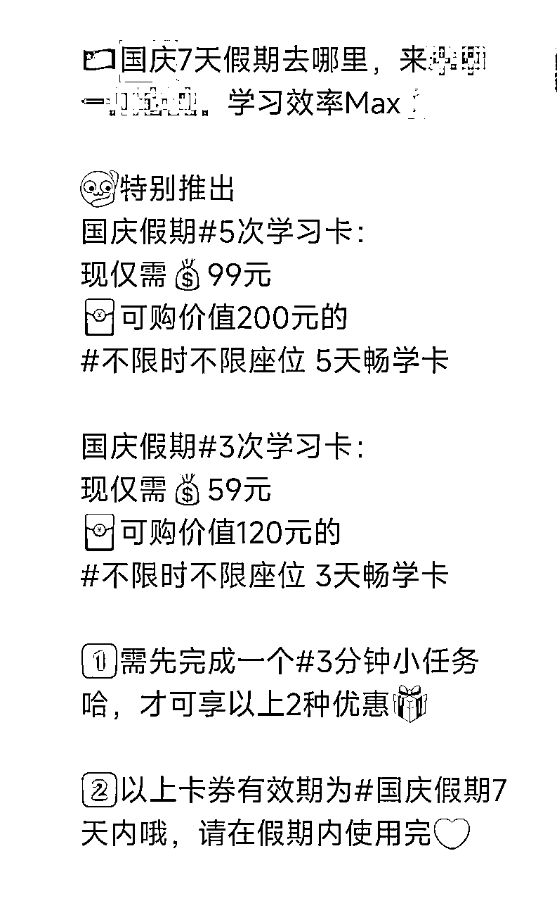
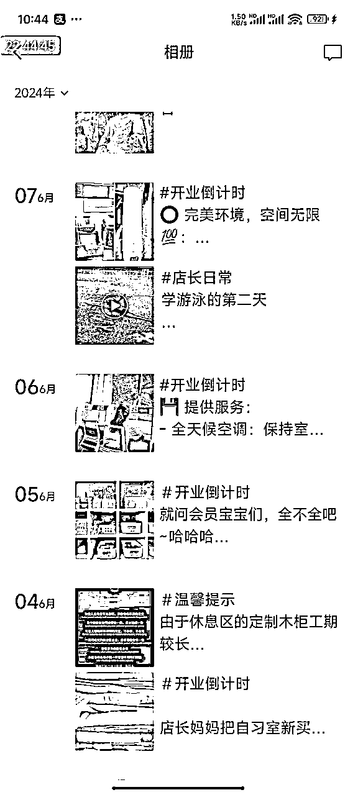
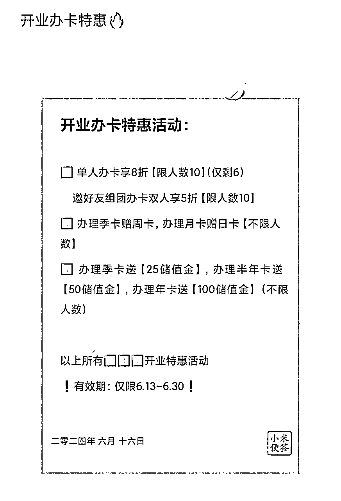

来源：https://a1s0pkr2og.feishu.cn/docx/Psg2doo2UomKo3xK3LMcYHfNnoe
大家好，我是00后的芝芝，坐标广州
1.从事AI写作两年，最高成绩 近三个月营收破百万
2.一家自习室主理人
由于我是先接触互联网再接触实体的，所以比起实体门店装造本身，我其实在流量和私域运营下更多功夫，
因此总结了自己的一些实体门店运营的实战体感，从而写出这篇文章，适用于大部分需要线上获客的实体行业。
适用人群：希望能给一些做实体店的，但是不太懂线上流量的一些老板一些收获，分享实体运营的思路玩法
传统实体老板想要转型到线上获客的话，是比较大的一个跨度，所以会对于传统实体人去接触互联网、去接触线上获客流量，是需要长期大量的学习
如果你是一个传统的实体人，刚开始接触互联网，你不懂流量，你要怎么最快的完成线上获客的0~1，实现这个破局？
首先就是要想着去做精细化的流量，就是一定要去把握精准流量，不要泛流量，
不要想着我刚开始做我就要做粉丝量多的账号，我就要做大爆款，你只要想着我发出去的这一篇视频或者帖子，能够给我带来哪怕是个位数的精准客户，那也说明我完成了0~1，就已经很棒了。
我们定的目标应该是要精准的客资，也就是要来加微信问产品的客户，
当我们的目标没有定错的时候，我们的动作就不会变形。也就是我们只要一个目标，也就是流量精细化的运营
公域平台的流量，也就是像自媒体平台，例如小红书、抖音这些内容平台，
作为一个新手互联网人，我们要去做实体门店引流，一定是要选择单平台深耕，把账号做爆，把账号做大的，
不要既做抖音又做小红书，我是不建议的，因为你的精力是有限的，
所以的话可以先去研究一个平台，它的调性和它的爆款逻辑是什么，把一个平台的一个账号先做好就完全足够了
那刚刚说的单平台深耕把一个账号做爆做大，听起来很笼统，具体要怎么做呢？
其实无非就是找出你同行的所有爆款，然后把它做成表格，然后每一个对标着去照着他的做，
他的标题是怎么样的你就怎么样，内容你只需要根据你的理解重新复述一遍，大意不变即可，
然后封面和图片的话，就按照他的角度去拍摄，只不过是你拍摄你门店的样子，一直发，是不可能说出不了爆款，或者做不起来账号的，
大道至简，没有很复杂的东西，就是用数量去拼概率。
但是前期为什么建议说实体老板可以先自己做呢？
因为这样成本低，而且你在尝试的过程中你会有做这个账号的体感，
那如果以后你去分出去之后，给别人做，解放自己的这个劳动时间的时候，你也可以教会别人怎么做，
而不是单纯的理论派，只会指手画脚，这个区别是很大的。我后面也会讲到，怎么样去把这个工作分出去，彻底解放自己的时间
至于更具体的，怎么做小红书怎么做抖音，怎么找对标、怎么用一些工具，这些就可以在生财的其他的帖子都可以找到，我这里主要是讲思路，希望实体老板们不要把这件事情想复杂，这就是你去动手做的第1步
实体老板常用的，还有一类平台，比较特殊的美团
美团它看似是公域流量，但实际上它是需要你去用小红书和抖音的流量要去反哺它，它才有可能获得更多的曝光
抖音和小红书是内容种草形式的，美团偏向于电商型平台，所以的话是玩法是不一样的，
我们的思路就是利用内容平台的流量，去反哺我们电商平台的流量
比如，当有人咨询说门店在哪里，怎么联系，礼貌问价等等这种精准流量的时候，不用着急加微信，
一般我都会在私信的时候，让他们去美团搜索门店名称，然后他们在美团下单，就自然会再加到我的微信上来
也就是说这样子一来一回，是增加了美团的搜索流量的，那这个时候我的门店流量会被更多的曝光，
再加上用户进行了浏览和下单这个动作，这些都是对平台有利的，那么美团他就会不断的提升我的门店等级以及我的门店曝光
所以的话，美团就是一个承接我客户的一个地方，我的美团门店装修一定要装修得很漂亮，让客户点进去有吸引力，
不管是图片、视频还是说路线指引，还有一些常见的百问百答等等，都会在美团和客服端那里呈现出来，
也就是说客户很多问题，他在美团上浏览他就能够解决了，那这边加到客服这边来之后，客服压力又会小一些
做老板，本质上是要学会偷懒的，你只有会在某些地方偷懒，你才能够去做更重要的事情，
也就是我刚刚前面说的，如果我已经把一个账号做起来了，我已经实现了0~1我现在想要把它分出去放大，或者去复制，我要怎么去做，
因为我后面我要做其它项目，所以的话自习室副业这一块的流量我是很想分出去的，
我希望就是有人可以替代我去做这个事情，因为我觉得他的可复制性非常强，不是非我做不可，
我已经做出来了，所以我可以教会他怎么去做，这也是为什么刚刚说为什么老板一定要先自己去做一遍
那么问题来了，我一个人做太累了，我要如何用最小的力气获得最大的实体门店流量呢？
我个人探索了以下几种供大家参考，看一下哪些更适合自己的行业和门店，去选择一些适合的去用就好了
想要去放大流量的话，肯定是要更多的渠道去获取流量的，但是我们为了尽快的跑通一个复制的模型，我们一定是先跑通
假设我先跑通小红书这块0~1的账号，然后我去复制给其他人，然后等他们能够解放我的时间之后，
我去跑抖音的账号，然后再去复制给别人，这样子一步一步来我就能够实现多渠道的获取精准流量
像小红书和抖音，具体选择先做哪个平台，其实取决于实体行业的性质，
像自习室的话，做小红书会比做抖音会更简单一点，所以他这个是会分行业的，还是有区别的，大家可以去观察一下自己行业更适合做哪个平台，起步最容易入手
我的意思不代表说抖音就不能做，而是说哪个更适合自己，更快上手。
一些小技巧——活动引流：
这里在平台宣传的时候可以结合活动促进引流，比如说，xx门店推广大使——来本店可以免费体验xxx，前提是发小红书/抖音/美团活动好评体验
再比如，评论区抽三个幸运儿到本店体验xx，这样很快就能把本店帖子带火
同城商家互导流量，这个的话很简单，就是你去用美团加上你周边3公里5公里的同城商家的客服微信，
第一种，然后去跟他们聊，说明清楚 我这边想要去你们朋友圈或者你们有一些私域群，可以去互相打广告，
第二种，也可以一起办一个联名活动，我的客户去了你那里，可以得到什么福利？你的客户来我这里，会得到什么福利
第三种，如果你门店名气不大，属于被动状态的话，可以考虑怎么样给其它商家带来价值，
比如说我是自习室的老板，我这边就和他们说，你的客户在你门店下单买东西的时候，可以跟他们说多赠一个xx自习卡，
就是我用我的产品，帮助其他商家的产品增值，可以尝试合作，活动一周或者是两周，看效果来考虑后面要不要长期持续的做这个活动
这样子的话就等于说我们可以花比较低的成本去获得到其他实体门店的流量，如果说有这方面需求的客户，他拿到了这样的福利体验券，他就会过来去体验，那后面的转化升单就看我们自己这一边了
我当时联系的都是周边的吃喝玩乐的商家，因为我的定位一定是年轻客户群体。
我把年轻客户群体里面，有学习需求的，把这一批给筛出来，他们愿意到我们店体验，那他未来有一天就愿意在我这里办卡，就这么简单的思路
所以的话就是先要通过你门店的客户群体用户画像，去筛选符合你方向的门店，然后再去跟他们谈这个合作。
当然前提是一定要算好账，一定不要让自己就是获取这个流量的成本太高，这样是不划算的，
因为自己是自习室行业的原因，我其实是零成本的，他来不来，对我都是零成本的，
因为我那个位置永远都在那里啊，这个就是我门店的特殊性，大家可以根据自己行业去做一个调整。
接下来我就要说多人力的玩法了，本质上我想偷懒，也就是我想有人帮我去做这个事情，那么我找谁帮我做呢？而且他还一定能做出效果呢？
首先的话就是去找兼职帮你自动化运转，但是兼职的话是要计算好成本的，
因为我们行业特殊性的原因，所以的话我是可以去跟客户做一个等价交换的，他去帮我做自媒体账号，我给他提供免费的座位，从而实现稳定0成本的这个兼职，我不需要给他付工资，我只需要给他提供他原本需要付费的座位
那如果是其他行业的话，比如说你是有一个体验卡的，你们门店的体验卡19.9、29.9或者是199都可以，
不管是哪一个体验卡，你去找一批符合你精准流量画像的兼职，让他们去给你分销这些体验卡
比如说你的门店群体流量是宝妈，那你就可以去找宝妈兼职，让宝妈去帮你卖体验卡，
承诺卖的体验卡的钱全部给他们，卖多少给多少，也就是意味着你也是没有很多成本就可以获客的，
只不过你把体验卡的钱一分不赚的给了兼职，然后你赚的是后面升单的钱。
注意兼职一定是要筛选的，一个是这个宝妈她有赚钱欲望，第2个是个宝妈一定要有一些宝妈资源，
不管是宝妈的这个朋友列表好友多，还是微信群多，都可以，渠道不限
然后再设立一些激励机制，比如说她卖出多少张卡之后多奖多少钱，比如我这边兼职自媒体的小助理，如果他做出了什么样的爆款，我这边会给他一些奖励机制的
它是要有一个这样的管理机制存在，才会比较好的自运转，不需要操太多心
社群裂变
把到店体验过的客户都拉进一个社群里，搞活动，往这个群里面拉xx个人就会给xx奖励，实现社群的裂变，
然后我们再去加这些新用户，因为拉到群里面的大部分都是亲朋好友，大部分都是周围3~5公里的人，精准同城流量
新老客户裂变
新客户到店裂变，举例：邀请亲朋好友到店，送同同甘共苦4小时卡
老客户的裂变，比如说他已经办了长期卡了，我会去跟他回访，会不定期的去聊他的需求，然后回访完之后，聊天氛围刚刚好的话，让他去帮我介绍一下其他有需要的亲朋好友，
推荐成功，他的亲朋好友会有优惠，同时他也会得到一个xx元的推荐费啊
这样回访的话，一个是我们获得了客户证言好评啊，可以去晒对不对？第2个的话我们还有一些裂变的机会。
所以的话它是没有坏处的，所以一定是要把自己的老客户给交付好的。
当然这些已经是除了实体门店功能需求之外，情绪价值的提供了，所以的话它是更差异化竞争的一个东西，也是能够让我持续裂变的一个原因
如果客户是因为一些活动或者一些裂变机制加到了我微信，我怎么样在短期内尽快的获得他的信任感，避免她没有到我门店体验就把我删掉呢？
这个问题的话。其实就是私域运营的一个板块了，也就是涉及到了我的朋友圈怎么运营，我怎么样去给用户搭建一个场域，去不停的触达他，让他对我产生信任感
首先我先来讲一下最基本的吧，这个就是运营最基本最基本的，大家都在说运营朋友圈
发朋友圈前想清楚，我们立的人设是什么？
如果说你立的是一个很传统的客服人设，那其实是没有温度的，很多时候都是要设一个老板娘ip或者店长ip。
这样子的话就会瞬间觉得，这个不是普通的客服，这个是一个真实的人，真实的老板
他会更让用户有一个信任感，而且也更愿意看你的朋友圈，不会很营销味
实体老板注意朋友圈，千万不要全是各种营销活动，各种福利的那种满天飞的朋友圈，那样的朋友圈客户是不爱看的
那既然我们刚刚说了，老板店长ip的人设，那朋友圈要怎么打造呢？
你就作为一个真实的人，去在朋友圈阐述你每天作为店长的一日是怎么样的？你今天给店里面准备了什么东西啊？你最近对店的未来的发展怎么样看？你今天在店里遇到了什么小趣事？
然后中间穿插一些客户赠言的好评，以及一些营销活动，这样子比例就恰到好处，不会让人反感，而且也会让人愿意看你的朋友圈，
其实在看朋友圈的过程中，信任感就不停的在搭建的，
所以的话它是一个定位的问题，当你没有把自己定位成一个普通的门店客服的时候，其实你的朋友圈运营就不会出现很大的偏差了
第2个就是定金制去把客户给留存下来，比如说你搞什么活动能够把客户留下来呢？
199抵299，99抵199，就是这个现金膨胀活动，那客户付了定金之后，他可能未来就会在你这里付费，不太不可能删掉你哈
如果说你办这样的活动，一定要在客户买之前跟客户微信聊天上留一个证据去确认啊，不退不换
提前走一下流程会更好一点，就不会容易出现很多冲动退费的事情
第3个的话建立信任本质上就是给客户搭建一个场域，去让他能够多跟你接触，或者是多跟你的门店的五官可以感受到的东西去体验。
也就是说只要他到了你的线下门店，那其实你就已经给他建立一个可以触达他的场域了，这个就是你打造的一个空间
那怎么样才能让客户到你的门店，而不仅仅存留在你的微信上，很快把你删掉呢？
很简单就是办各种小活动，给客户一点点小的薅羊毛的机会，让他愿意到你的门店去体验，那这个时候你就给了一个可以疯狂触达他的机会，也就是一个可以低转高升单的一个机会，

也可以把每天不同客户来体验的感觉写成小故事，不断在朋友圈拉取客户注意力，看着看着，客户就想来体验一下，是不是真的像写的这么好？
其实这个也是私域精细化运营的一部分，也就是我们要去打标签
打标签的话一般是分为abcd几个等级，用来区分客户他的消费的力度和消费的频率，去做一个分级的
那么肯定是在你这里付费的用户，你要花更多精力去维护他们，然后做出更多更好的客户反馈，然后去吸引更多还没付费的用户，正向循环
我们很容易犯的一个毛病，就是我们花了很多精力在那些一直不成交的用户上，但是忽略了我已经很爽快的交了单的客户。
这样反而弄自己很累，所以凡是给你爽快付款的客户一定是要拿出超预期的交付去给到他们的，这本身也就是一个很好的转介绍裂变和客户证言的一个方式，这样才能吸引到其他一些潜在的隐藏的客户，
并且通过打标签的形式，也更好的能够去跟单。
我能知道这个客户他有没有来过店，他没来店的话，我可以针对他们这类群体做一个小活动去激活
所以做活动并不是一定要在朋友圈或者社群里大张旗鼓的。很多时候只是针对一小部分打标签的人群去做专门为他们定制的活动，然后去激活他们。
比如说我想要去做老客户的复购和裂变，那么我就会去专门做一个活动去私发给他们，说这个是针对于他们所特制定制的一个复购优惠活动，其他人是没有参与资格的噢，
比如针对于没有来过店的客户一直是存在微信上的，那么我也会去做一些激活的动作，给他们一些福利到店体验感受一下，
当我们打了标签之后，我们更清楚的能知道我们办这个活动，它的终极目的是什么，我们是想要激活没有来的潜在客户？还是想要去活跃老客户？
想清楚目的之后，很多事情就很清爽了，不会很拖沓，不同活动就我们就可以针对不同的人去发不同的话术和不同的活动营销方案
客户不下单，无非就是我觉得这个好，但是我不急，或者是我觉得这个不好不值得我买，对不对？
首先排除后者，因为我们做实体门店一定是要把自己的交付保证标准化，才可以去做引流这个动作的，这样你才有信心去扩大流量，且能接得住
那么“我觉得好但我不急着买”这个事情怎么解决？就是去营造一些紧迫感和稀缺性，那么客户他就会在更短的周期内下单，
这个是必然的，是人性使然
那么实体门店要怎么去打造这种紧迫感呢？
很常见的套路就是用一些促销活动，比如说我还有几天就要涨价了，或者是我这这个月的优惠活动是什么？
还有多少个名额。错过这个名额就没有了，这些名额都是要动态的，需要去朋友圈去实时展示的，晒单就是你在朋友圈晒单也是一种紧迫感的方式，
因为实体门店它的容纳率是有限的，比如说自习室的话，我就会说还剩多少个座位了，或者是某某类型的座位没有了，要的话抓紧下单之类的，
那其实我们我们其它实体行业肯定也是可以参照这个思路的，比如瑜伽，一个比较好的老师，他的名额有多少个？比如奶茶店，我这个限量多少？
其实像自习室客户如果说他备考，如果他上岸了，他总不可能再来考一年
所以它是复购没有那么的刚需的，所以这种客户怎么去发挥它的最大价值？
我的原则，要么就买我的产品，要么就帮我宣传，
客户经济条件不允许买我的产品，那么我会给你一些优惠活动去让你帮我做宣传，我给到你一些好处，

当他不复购了，他没有这个需求了，能发挥它的其他价值就是宣传价值、裂变价值，
那其实这个时候，就可以去做回访、裂变、分销等动作了(前面已经详细阐述)
第2个的话，还可以去打二次复购，但是二次复购可能就是其他品了，
这个人群它后续还需要什么？比如说他考上了研之后，他还有买一些学习用品的需求，或者是他买一些研究生的学习资料的需求等等。
我只是做个假设——那么我就可以把这些人引流到另一个微信号上，然后那个微信号就是专门做这个品的
当然我更建议就是选中高客单一点的去复购，包括吃喝玩乐这些都是可以，根据自己的客户群体画像去定位，总之就是反复的去把一个流量的价值发挥到最大的
其实实体门店的竞争也是比较大的，比如说你在这里开了，我就在你旁边开，
我觉得是你在这里选的位置好，所以你选在这里，那我就跟着你，我看你生意好，我也在你旁边开一个去抢你的流量，这个是很常见的中国人做生意的思维，
所以的话像我开店以来，我其实周边就已经有两家店了，但其中一家已经倒闭了。
所以的话它是很常见的一个问题，那其实本质上就是要差异化竞争
想清楚一个问题：我们都能满足客户这个基本需求，但他为什么就是愿意选择我们家？我们家跟其他家究竟有什么区别？
那这时候其实做的就是细节了，服务行业做到极致，做的都是细节
细节，也就是交付精细化，如下：
顾客消费仪式感是一定要有的，就是当客户给你转账的那一刻，其实是他最脆弱的，需要你去给到他一些信心的时刻，让他觉得在他付钱的那一刻，他觉得这个钱值了，
可能就因为你的一句话，或者你一个细节动作，就会让他有这种仪式感，就很棒
也就是说，我们实体门店要怎么样去给到顾客消费的仪式感呢？
其实像自习室的话，它是办月卡，所以的话在客户办月卡的那一刻，其实就可以准备一些长文案去感谢这个用户的信任，以及说一下我们未来会给他一些什么样的陪伴和服务，然后再发一些资料或者注意事项之类的等等
这种就是仪式感，那么其他实体门店就根据自己的情况，去做一个客户下单消费那一刻的仪式，它是可以就可以塑造出来的，
比如饭店消费集卡劵，满多少张优惠多少
比如健身房现场办卡后，砸金蛋领福利
每个月可以根据不同的节假日和客户群体的特殊活动去展开营销活动，比如说自习室的话，就可以有读书月，捐赠一些书就可以获得免费自习体验。

再根据我的客户群体，基本上是学生党，那么有考研考编考公考证的一些时间节点的时候，也可以办一些特殊的活动，比如说考研奖金池这种激励活动
再举一个其他行业的例子，如果说是瑜伽店的话，可能就是着重于三八女神节的活动。
总之就是根据特定的客户群体去创办特定的活动，给到一些特定的价值感。
通过一些活动，去做精细化销转，在活动中激活、留存、和拉新客户，给门店一个机会疯狂“刷脸”
现在实体店单纯靠功能性去获客，已经比较难了，
因为现在情绪价值是很贵的，客户买的不是功能性，而且买的是一个开心。来你这里的环境很好，那我心情好，我就愿意为你买单。
我来自习室，我不是买一个座位这么简单，我买的是这里的环境和氛围，我在这里我感觉我的心境很好，所以的话我愿意为此买单

所以说差异化竞争，其实在环境上有差异化，其实就能够拉开一定的差距，因为这就是交付的一部分。
比如说我的自习室在3~5公里之外，暂时是没有其他门店做的比我的环境要更好的，那我就对我的交付很有信心，去引流的时候我也很自信，不会担心流量过来接不住，所以的话后端交付是很重要的。
但是在实体门店中的后端交付，其实是我们可以全权把控的，在开店的过程中就要有这样子的意识，去打造实体门店的妆造
可以去看和你同行的实体门店，周边的10家20家30家他们都是怎么样的，那么集百家之所长，你的环境就一定不会差，你的差异化就出来了
用户的精细化运营，也能够让你的差异化竞争力有一个很显著的提升作用，
因为刚刚前面也说到了，给用户打abcd不同的标签，意味着它是不同等级的客户，那么你在跟他跟进和交流过程中，其实你是知道他是大概什么情况的，他在备考的是什么，
这个时候你会更有温度，你会把这个微信当做一个真实的人，而不是一个数据一个流量，你能够看到屏幕背后真实的人真实的情绪，
那么能够把私域运营到这种程度的话呢，其实已经能够甩开同行一段距离了，那个时候信任感就更容易建立了
很多时候客户为什么愿意选择你这里身上消费，不是说你的产品有多么独特，而是因为我觉得我跟你熟悉，所以我想在熟人这里买，所以我选择了你
很多时候就这样子简单的一点点信任感的积累，就会影响用户的购买决策，所以我觉得用户精细化运营是非常非常重要的
我这里再分享一下，除了打标签之外，还有哪些动作可以去做的呢？
比如说可以经常跟客户的朋友圈互动，给他们点赞评论，
以及定期去跟客户沟通，不管是买了卡的还是没有买卡的，都可以定期跟踪访问，做一个回访复购和裂变的目的

这个动作虽然很繁琐很占时间，但是它很有价值，它后面的长尾价值是很大的，
其实这也是用户精细化运营的一部分，也就是你跟用户会保持一个关系上的联络
还有一个小细节，就是可以开通展示微信视频号在微信上，他可以不是拿来获客的，他就是作为一个展示你门店动态视频的一个窗口能够让客户加上你微信之后，
感觉到你这个门店是怎么样的环境和氛围，以及店长是一个怎么样的人，这个会比照片更加生动，把视频号打造好像朋友圈一样呵护好也会是一个非常吸引人的窗口
新店开业没有人气，没有人知道我这个店在这里。怎么办？
首先没有人来是正常的，因为如果只要我们不是开在1楼的当铺，那我们本身就没有自然流量，那么没有人知道我们店开业没有人气都是正常的
那我是怎么去解决这个问题的呢？
我在开店之前的两个月就已经开始着手准备做小红书账号了，那么在我开业当天已经积累了一批种子客户，并且我会持续的在朋友圈运营去做活动。
包括前面收到的现金膨胀活动，让这批种子用户彻底的在我这里锁死，那么当我开业的时候他们都会过来体验，然后办卡销转起来也会容易很多
所以只要你的实体门店不是单纯靠自然流量获客的，而是很需要去靠美团线上获客的，那么就必须必须要提前做宣传，一定要提前做自媒体的意识，不然的话开业之后就会有一段很长的空窗期，到时候再做的话就很吃亏
刚刚说提前宣传，但是我什么都还没有我怎么宣传呢？很好的问题
那就从零开始宣传，从0~1去拍摄，你是怎么样把这个店给慢慢的打造的这么漂亮的，你的设计思路是怎么样的？你为什么要这样设计
勇敢的把毛坯房的样子拍出来，然后再拿妆造后的精修版去对比，也是很有冲击力的，很容易爆款
出镜：丹丹姐
这些素材既可以往小红书平台发，也可以往朋友圈里面去发，公域私域，都可以同步发，
因为它就像一个朋友圈剧本一样，它是像连续剧一样可以去追的，那么当客户去追着看的时候，他就会有一种养成系店长的感觉，
他会觉得他参与进了这个店的从0~1的过程，它是这里的一份子，这个时候你这个店就不是一个普普通通的店了，而是有回忆感和参与感的店，

那么你的种子用户自然而然就形成了，这就是养成系的魅力
我在开业的时候会做一些优惠活动去吸引用户，比如说单人办卡9折，双人办卡8折之类，优惠力度比较大的活动效果还是比较好的，

在开业的第1个月就是不能够太在意盈利问题，而是保证一个盈亏平衡的情况下，去拿这些钱去做曝光做流量，
但是你不能够只是单单的嘴皮子这样说我办这个活动，而是我会持续不断的去做这样的一个朋友圈氛围感的营造，
只要有人办卡了，我一定会发朋友圈，并且会说剩余名额多少个，并且持续的去跟踪一些有意向的客户去跟他们聊，消除他们的顾虑
老店持续不断的有新鲜血液，其实并不难，只要做好前面说的分销和裂变动作就会不断的有新流量。
但是前面说的流量自运转，并不代表啥也不用管，而是需要老板定期去复盘去跟踪的，
因为你做过，所以你懂，因为你懂，所以你能够看出下面的小朋友有什么问题，你需要做好方向上的引导，那么整个流量自运转的大盘就不会出现大乱子
那这个模型它是能够跑得通的，它就可以不断的复制，不断的宣传，不断的内容分发，那就会有不断的新鲜血液。
而一个单店的承载流量是有限的，所以的话也不需要盲目的扩大复制流量
像我的门店运用这套打法，我基本没有怎么担心过流量，非常稳定
小小的实体店，结合用好私域管理的精髓，也可以有很大的发展空间
自习室本质是空间租赁，通过这套私域精细化管理，拓展到做线下社群、线下相亲等等都是很有想象力的，因为客户粘性高且对你有信任感。
欢迎一起探讨，希望对你有帮助。